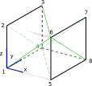

Uniaxial Extension Solid
The problem
In this tutorial an elastic Saint-Venant-Kirchhoff solid submitted to a uniaxial loading test is considered. The geometry is given by a rectangular cuboid with dimensions $L_x=1$, $L_y=1$ and $L_z=1$, and a tension vector $p = 3 \textbf{e}_x$ is applied on the face at $x=L_x$.
The ONSAS example file
The main features of the onsasExample_uniaxialExtension.m file are described in this section.
MELCS parameters
Before creating the finite element mesh discretization, the MELCS parameters shall be defined. The material properties of the model are defined by
materialsParams = {[ 0 2 E nu ]} ;where the first entry of the vector is the density (considered zero), the second is the constitutive behavior (2 for SVK material) and $E = 1$ and $\nu = 0.3$ are the constitutive parameters of the SVK model.
For the elements, two types of elements are used in the model: triangles (number 5) for loading and spring boundary conditions, and tetrahedra (number 4).
elementsParams = { [ 5 ] ; ...
[ 4 2 ] } ; % analytic constitutive tensorwhere the second entry of the vector in the second entry of the cell is the flag corresponding to the method for computation of the constitutive matrix (2 for analytical).
loadsParams = {[ 1 1 p 0 0 0 0 0 ]} ; % global coords tension appliedcrossSecsParams = cell(1,1) ; %springsParams = {[ inf 0 0 0 0 0 ] ; ...
[ 0 0 inf 0 0 0 ] ; ...
[ 0 0 0 0 inf 0 ] } ;
Mesh
The solid is discretized using a mesh formed by 8 nodes with the following coordinates matrix
Nodes = [ 0 0 0 ; ...
0 0 Lz ; ...
0 Ly Lz ; ...
0 Ly 0 ; ...
Lx 0 0 ; ...
Lx 0 Lz ; ...
Lx Ly Lz ; ...
Lx Ly 0 ] ;